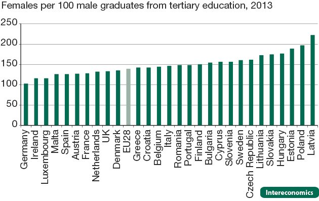
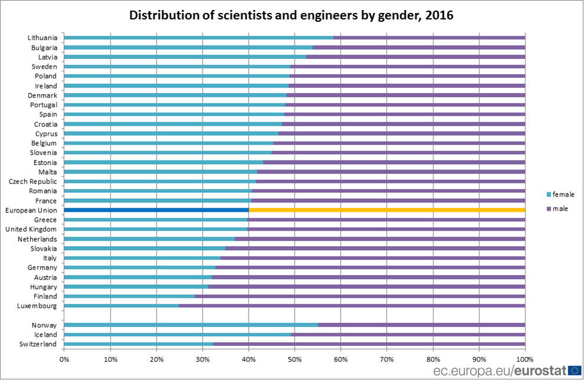
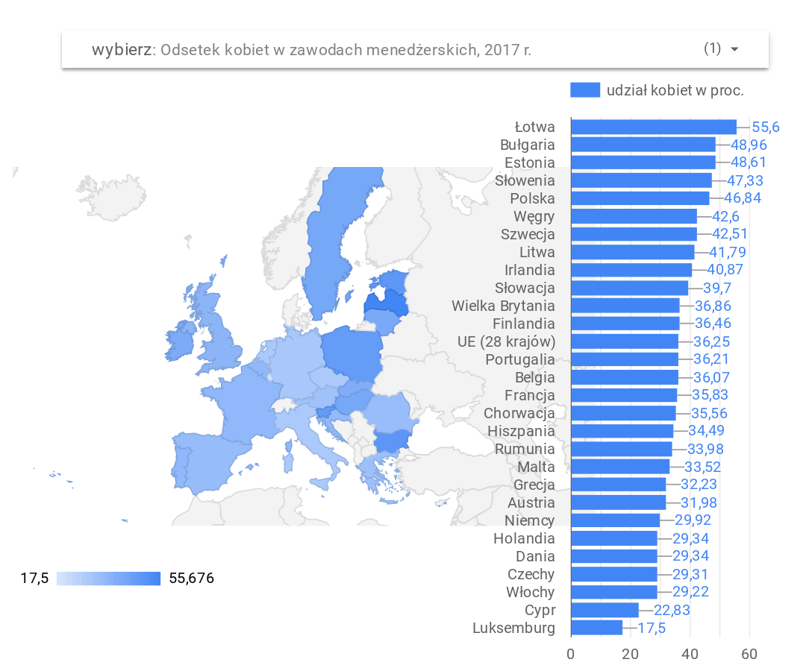
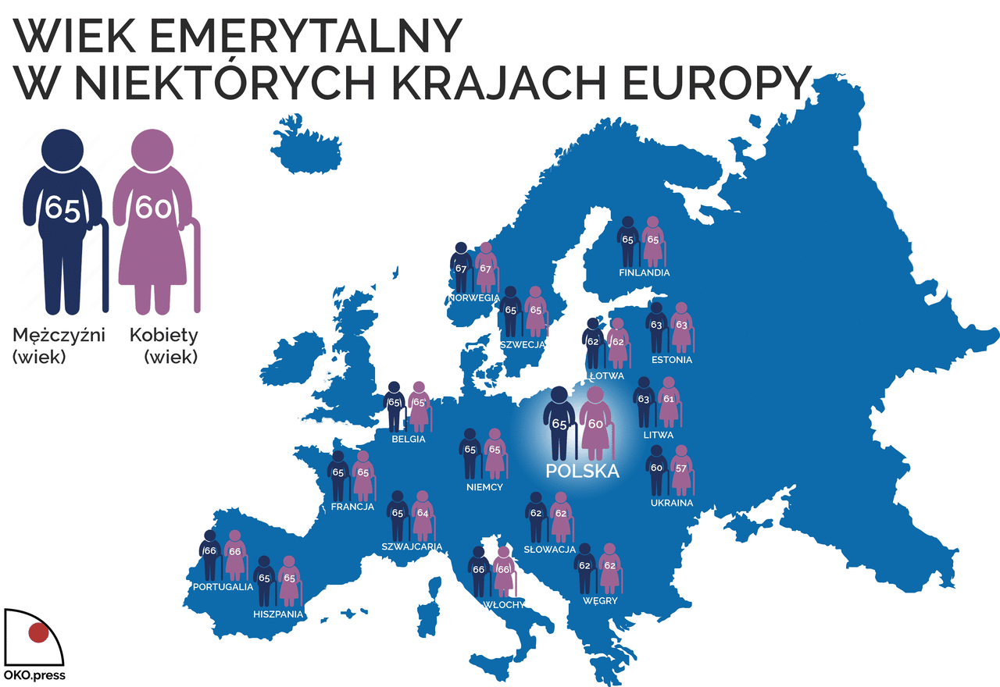
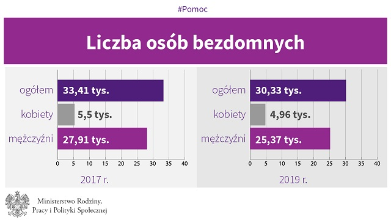
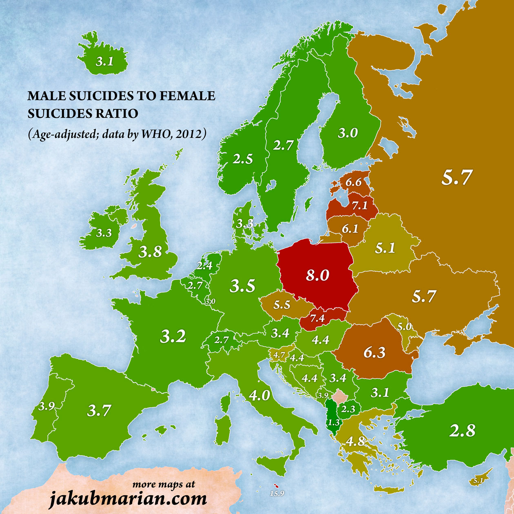
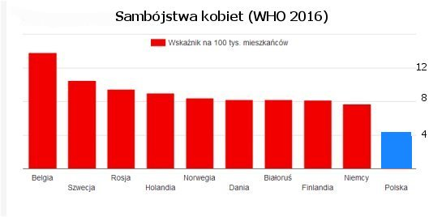

Niniejsza strona jest odpowiedzią na kłamliwą akcję „Nie czekam 107 lat”, której organizatorzy twierdzą, że kobiety w Polsce nie mają takich samych praw i szans jak mężczyźni oraz że są dyskryminowane w wielu dziedzinach życia.
Jak w rzeczywistości wygląda ta rzekoma dyskryminacja?
Obszary „dyskryminacji” kobiet: edukacja(1), edukacja(2), nauka/inżynieria, praca, polityka, emerytury, bezdomność, samobójstwa(PL), samobójstwa(EU).
Polki są znacznie lepiej wykształcone od Polaków. W Polsce dwukrotnie więcej kobiet niż mężczyzn kończy studia. Jeden z najwyższych wskaźników w Europie. Nadal jednak można spotkać się głównie z programami stypendialnymi tylko dla kobiet, a także z dodatkowymi punktami za płeć żeńską podczas rekrutacji na studia.

Źródło grafiki: https://www.intereconomics.eu/files/journal-issues/intereconomics/10.1007/s10272-017-0637-z/Klasen1.jpg
Wg danych GUS w roku akademickim 2018/2019 kobiety stanowiły 58% wszystkich studiujących w Polsce. Studentów jest niemal 200 tysięcy mniej niż studentek. Nadal jednak można spotkać się głównie z programami stypendialnymi tylko dla kobiet, a także z dodatkowymi punktami za płeć żeńską podczas rekrutacji na studia.
| Wyszczególnienie | Ogółem | Kobiety | Mężczyźni |
|---|---|---|---|
| POLSKA | 1 230 254 | 713 451 | 516 803 |
| dolnośląskie | 120 057 | 67 616 | 52 441 |
| kujawsko-pomorskie | 56 640 | 34 827 | 21 813 |
| lubelskie | 68 819 | 41 221 | 27 598 |
| lubuskie | 12 596 | 6 864 | 5 732 |
| łódzkie | 78 240 | 47 338 | 30 902 |
| małopolskie | 148 246 | 87 007 | 61 239 |
| mazowieckie | 250 344 | 140 067 | 110 277 |
| opolskie | 18 757 | 10 673 | 8 084 |
| podkarpackie | 46 060 | 25 677 | 20 383 |
| podlaskie | 30 243 | 17 979 | 12 264 |
| pomorskie | 81 300 | 47 784 | 33 516 |
| śląskie | 107 982 | 62 497 | 45 485 |
| świętokrzyskie | 24 730 | 15 618 | 9 112 |
| warmińsko-mazurskie | 26 244 | 14 891 | 11 353 |
| wielkopolskie | 123 637 | 73 233 | 50 404 |
| zachodniopomorskie | 36 359 | 20 159 | 16 200 |
Polska jest krajem, w którym prawie połowę naukowców i inżynierów stanowią kobiety. Jeden z najwyższych wskaźników w Europie.
Źródło: https://ec.europa.eu/eurostat/web/products-eurostat-news/-/EDN-20180210-1

Wg danych Eurostatu, w Polsce kobiety stanową 47% kadry menedżerskiej. Jeden z najwyższych współczynników w Europie. Więcej kobiet wśród menedżerów jest tylko w Słowenii, Estonii, Bułgarii i na Łotwie.

Źródło grafiki: https://datastudio.google.com/embed/reporting/1YDoMBiY7vO-HvCsVYZSsuEjNeB-IB02p/page/uf3j
Kobiety w Polsce mają zagwarantowane 35% miejsc na listach wyborczych.
Wybory samorządowe w 2018 r. są drugimi, w których obowiązują parytety. Efekt? Komitety na gwałt szukają kobiet, by zgodnie z przepisami umieścić je na wyborczych listach. Nie mają wyjścia, bez nich nie będą mogli ich zarejestrować. Ustawa o parytetach wymusiła bowiem umieszczenie minimum 35 proc. kobiet na listach kandydatów.
Mężczyźni w Polsce są dyskryminowani przez system emerytalny. Różnica między wiekiem emerytalnym mężczyzn i kobiet wynosi pięć lat i jest największa w Europie.
Cytat z artykułu:
Panowie opłacają składki przez 37 lat, a pobierają emerytury przez 11, a kobiety wpłacają do systemu pieniądze przez 33 lata, a pobierają przez 21 lat.
Przez 33 lata pracy kobieta przelewa do ubezpieczyciela społecznego łącznie około 303 tys. zł (33 lata razy 12 miesięcy razy 765 zł), a mężczyzna przez 37 lat - 399 tys. zł. Mamy więc 96 tys. zł różnicy na niekorzyść mężczyzn.
Jeśli przeliczyć to na konkretne kwoty wypłat, to panowie dostają łącznie średnio 345 tys. zł emerytur w ciągu swojego życia, a panie 450 tys. zł. Mężczyzna dostanie więc około 44 tys. mniej niż wpłacił, a kobieta 51 tys. więcej.

Źródło grafiki: https://oko.press/images/2017/08/MAPAEUROPY.jpg
W Polsce wśród bezdomnych jest pięciokrotnie więcej mężczyzn niż kobiet.
2017
16,46% kobiety
83,53% mężczyźni
2019
16,35% kobiety
83,65% mężczyźni

Źródło grafiki: https://www.gov.pl/attachment/9f964fb7-1e30-41c0-8cd3-273cff63f6ad
Polskie kobiety popełniają samobójstwa ośmiokrotnie rzadziej niż polscy mężczyźni. Dane Światowej Organizacji Zdrowia z 2012 roku.
Żródło: https://jakubmarian.com/suicide-rates-by-country-in-europe/

Źródło grafiki: https://jakubmarian.com/wp-content/uploads/2016/09/suicides-europe-ratio.jpg
Polskie kobiety popełniają samobójstwa dwukrotnie rzadziej niż kobiety w innych krajach Europy. Dane Światowej Organizacji Zdrowia z 2016 roku.
Źródło: http://www.racjonalista.pl/kk.php/s,10225
Cytat z artykułu:
Podsumowując, nie istnieje w Polsce szczególny problem z samobójstwami — ich skala jest niewiele wyższa niż średnia dla całej Europy a zarazem niższa niż dla północnej Europy; nie istnieje także w Polsce szczególny problem z samobójstwami mężczyzn, gdyż ich skala wpisuje się w średnią regionalną. Istnieje natomiast w Polsce szczególnie niski poziom samobójstw wśród kobiet.
Wyjaśnieniem tego zjawiska, tak jak i w innych analogicznych regionach świata, jest kulturowa i społeczna pozycja kobiety. Choć według ideologii politycznej poprawności sytuację kobiet w Polsce najlepiej opisuje słowo „piekło", twarde dane, czyli liczby, pokazują obraz zgoła odmienny: pozycja kobiety w Polsce jest szczególna na tle Europy jak i świata:
- według Agencji Praw Podstawowych UE, w Polsce występuje najniższa w UE skala przemocy wobec kobiet (badanie dotyczyło przemocy realnej, a nie jedynie tej zgłaszanej);
- według danych OECD, Polska jest wśród państw z najniższą akceptacją przemocy domowej wśród kobiet;
- według raportu New World Wealth, Polska jest najbezpieczniejszym dla kobiet dużym krajem Europy;
- według raportu PwC, Polska jest wśród 10 państwa świata o najniższych nierównościach płac kobiet i mężczyzn i najszybciej na świecie zniesie te nierówności (nie ma to nic wspólnego z niskim poziomem płac, gdyż w innych krajach o podobnym poziomie płac różnice są znacznie większe niż w Polsce);
- według raportu Grant Thornton, Polska jest unijnym liderem w obsadzaniu kobiet na stanowiskach kierowniczych w firmach.

Źródło grafiki: https://www.racjonalista.pl/img/strony/porownaniesamobojstwkob.jpg
Ostatnia aktualizacja: 2021-05-14
{kind=link}
{kind=link}
{kind=link}
{kind=link}